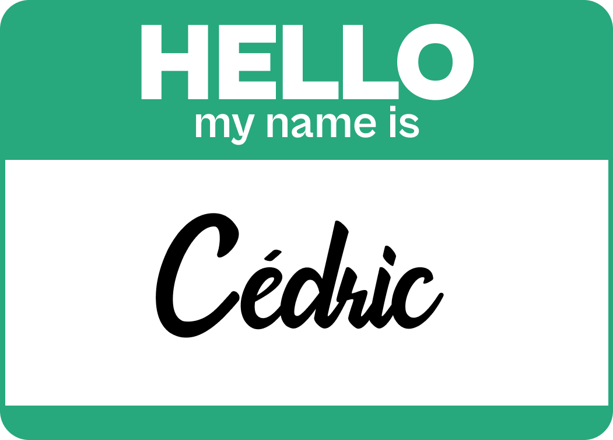
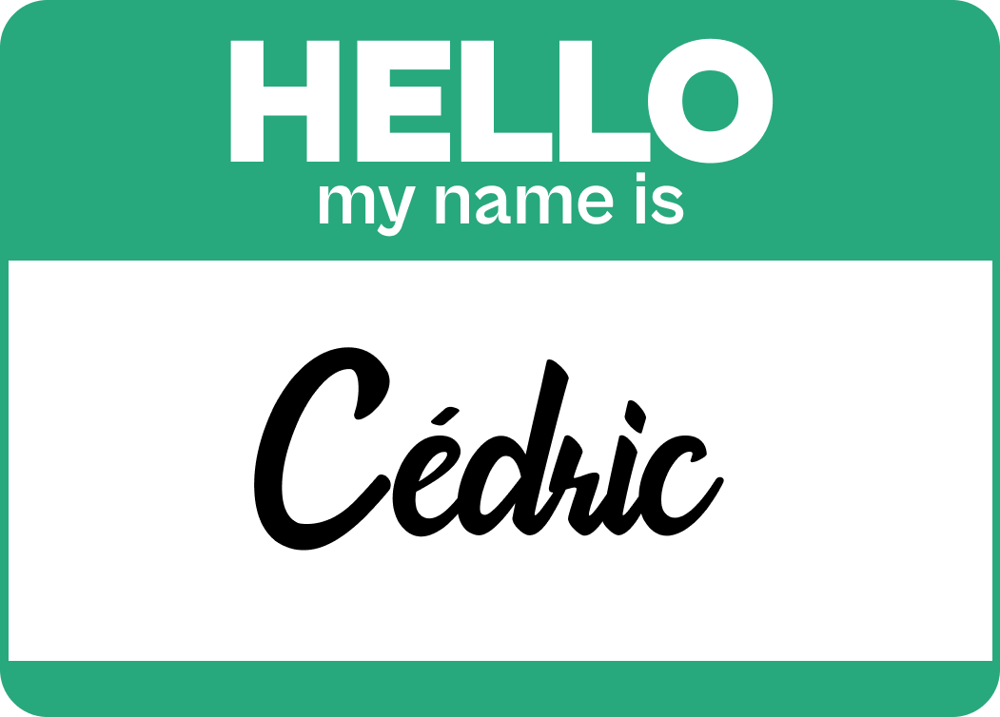

Schedule
Day 1
Monday, July 25, 2022
| Time | Module | |
|---|---|---|
|  | 09:00-09:30 | Introduction |
No matching items
Day 2
Tuesday, July 26, 2022
| Time | Module |
|---|
No matching items
Monday, July 25, 2022
| Time | Module | |
|---|---|---|
|  | 09:00-09:30 | Introduction |
Tuesday, July 26, 2022
| Time | Module |
|---|